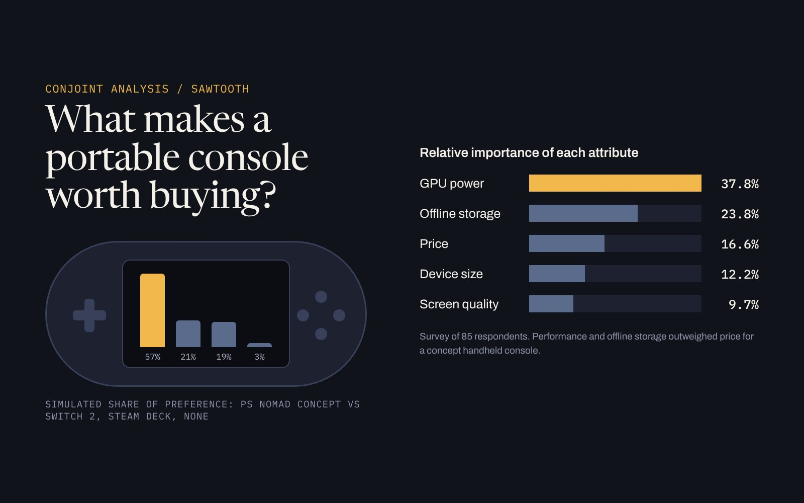
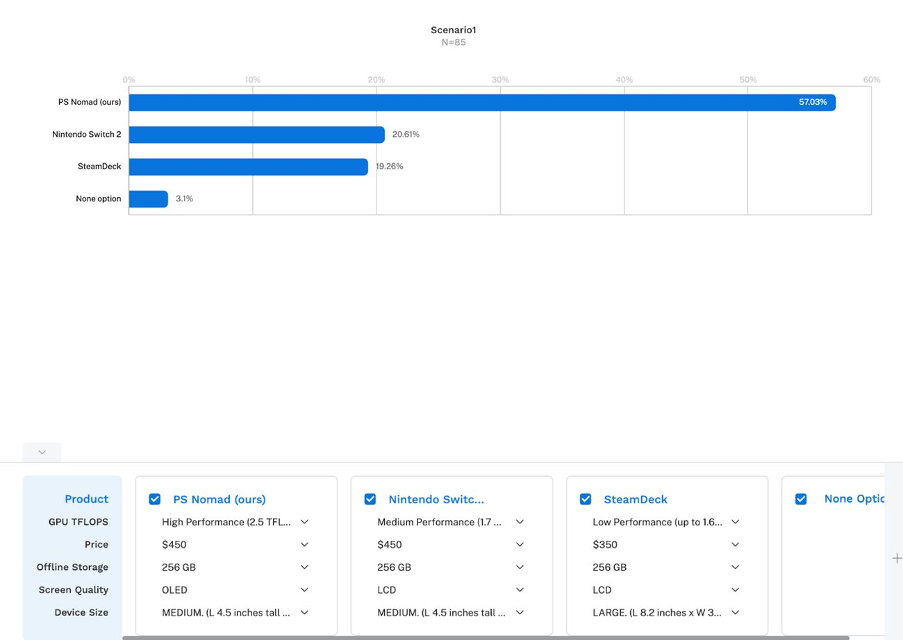
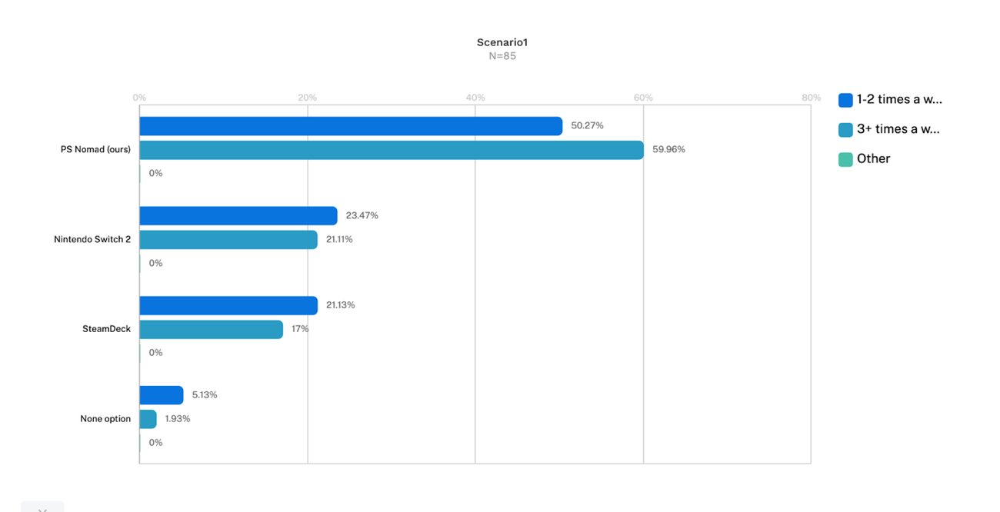
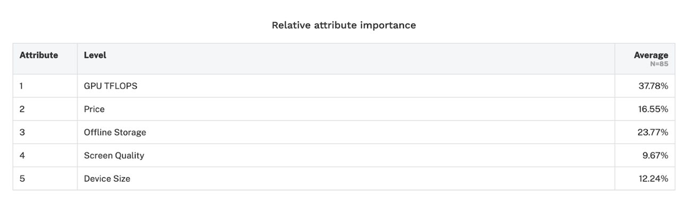

For a concept portable PlayStation, it was not obvious which features (GPU power, storage, screen, size or price) actually drive preference, or where to price it.
I designed a Sawtooth conjoint survey that tested combinations of attribute levels, such as LCD vs OLED, 64GB to 512GB storage and three price points, then calculated utility scores and standard errors for each level.
A ranked model of what matters most, plus a sensitivity analysis and a market share simulation pointing to the feature set and price that win the most preference.



